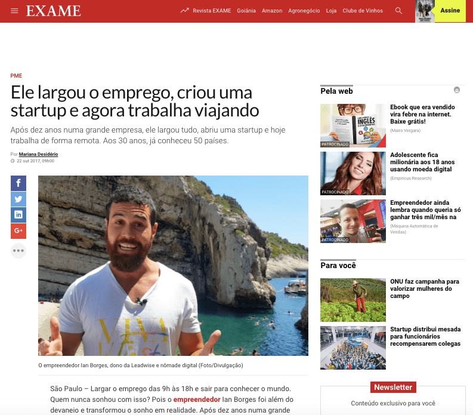
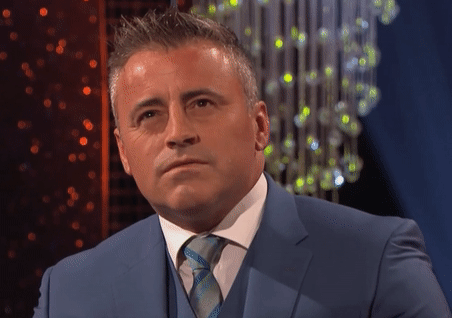
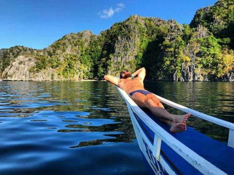
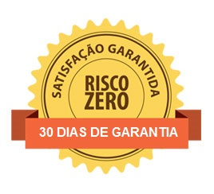

<div class="content" id="main-content">
  <article class="post_box grt top">
    <div class="headline_area">
      <h1 class="headline">Quer viajar mais vezes, de forma mais econômica e menos turística?</h1>
    </div>
    <div>
      <p><span class="highlight"><em>Aprenda a hackear sua viagem e acumule <strong>experiências inesquecíveis</strong> para contar para os seus netos!</em></span></p>
      <div class="indent">

        <div class="noindent">
          <p>
          </p>
        </div>

	     </div>
	<p class="center"></p>
    <div class="indent">
	      
        <p>Você já teve o sentimento de <strong>pagar muito caro numa passagem aérea?</strong></p>

        <p>Ou ficar na dúvida entre se <strong>hospedar num hotel no Booking</strong> ou num <strong>apartamento no Airbnb?</strong></p>

        <p>Sabe que <strong>acumular milhas é importante</strong>, mas nunca encontra uma oportunidade para trocá-las por algo de valor?</p>

        <p>Fica na dúvida se leva <strong>dinheiro em espécie</strong>, se usa o <strong>cartão de crédito</strong> pagando rios de IOF ou se existe outras soluções?</p>
        
        <p>Qual <strong>seguro viagem</strong> deve comprar?</p>
        
        <p>Quais <strong>sites</strong> deve usar?</p>
        
        <p>Que <strong>aplicativos</strong> deve instalar?</p>
        
        <p>Se você deve comprar um <strong>chip local</strong> ou pagar <strong>roaming no celular</strong>?</p>

        <p>Que <strong>tipo de mala e acessórios</strong> fundamentais deve levar?</p>
        
        <p>Como descobrir as <strong>boas dicas locais</strong>?</p>
        
        <p>Como não cair nas <strong>pegadinhas turísticas</strong> e viver uma <strong>viagem inesquecível</strong>?</p>
        
        <p>Então...</p>
        
		
		
        <p>Depois de ter viajado por mais de <span class="highlight"><em><strong>60 países e 500 cidades como empreendedor e nômade digital</strong></em></span> ao lado da minha companheira de vida, eu posso te garantir que eu já cometi muitos erros e aprendi bastante nessa jornada...</p>
        
        <p>Hoje eu vou te ajudar a <strong>hackear a sua viagem</strong> e te fazer <strong>economizar muito <span class="highlight"><em>TEMPO e DINHEIRO</strong></em></span>!</p>
        
        <p>O que vai te permitir <span class="highlight"><em><strong>VIAJAR MAIS VEZES</strong></em></span>, de <strong>forma mais econômica e acumular <span class="highlight"><em>EXPERIÊNCIAS INESQUECÍVEIS</em></span></strong> para contar para os seus netos!</p>
        
        <h2>Com o treinamento online HACKEANDO SUA VIAGEM, você terá acesso a:</h2>
          
        <div class="noindent">
          <ul>
            <li>Todo o meu <strong>conhecimento sobre viagens</strong>, através de um <strong>curso online completo com vídeos e explicações detalhadas</strong> de todos esses travels hacks,</li>
            <li>Além de participar de uma <strong>comunidade fechada de travel hackers</strong> compartilhando suas últimas descobertas pelo mundo,</li>
            <li><strong>Encontros em grupo online periódicos</strong> para tirar suas dúvidas comigo!</li>
          </ul>
        </div>

        <p>Nesse curso online, você aprenderá sobre:</p>
          
        <p><strong>>> PASSAGENS AÉREAS</strong></p>
        <p>- Quais os melhores sites</p>
        <p>- Como viajar para vários destinos pagando uma única passagem</p>
        <p>- Quais os melhores dias</p>
        <p>- Como aproveitar promoções</p>
        <p>- Companhias low cost</p>
        <p>- Pegadinhas a se evitar</p>

        <p><strong>>> HOSPEDAGENS</strong></p>
        <p>- Qual a melhor opção para meu estilo de viagem</p>
        <p>- Quais os melhores sites</p>
        <p>- Dicas de negociação no Airbnb (descontos até 30%)</p>
        <p>- Como se hospedar de graça</p>
        <p>- Como evitar pagar IOF</p>
        <p>- Experiências exóticas</p>      
                  
        <p><strong>>> SEGUROS</strong></p>
        <p>- O que preciso ter</p>
        <p>- Como não pagar pelo seguro viagem</p>
        <p>- Como não pagar pelo seguro de carro</p>
        <p>- Pegadinhas a se evitar</p>      
          
        <p><strong>>> OUTROS TIPOS DE TRANSPORTE</strong></p>
        <p>- Trem</p>
        <p>- Onibus</p>
        <p>- Aluguel de carro</p>
        <p>- Aluguel de motorhome</p>
        <p>- Carona</p>
  
        <p><strong>>> GRANA NA VIAGEM</strong></p>
        <p>- Como planejar os custos da viagem</p>
        <p>- Como levar a grana (dinheiro, cartão, travel money...)</p>
        <p>- Melhores cartões</p>
        <p>- Como transferir dinheiro</p>
        
        <p><strong>>> APLICATIVOS</strong></p>
        <p>- Aplicativos essenciais na sua viagem</p>
        <p>- Transporte</p>
        <p>- Comunicação</p>
        <p>- Controle de gastos</p>
        <p>- Recomendações</p>
        <p>- Gestão de programa de milhas</p>
        <p>- Edição de fotos</p>
        <p>- Mapa offline</p>
              
        <p><strong>>> ACESSÓRIOS DE VIAGEM</strong></p>
        <p>- Mala</p>
        <p>- Mochila</p>
        <p>- Roupas e Calçados</p>
        <p>- Sim card para o celular</p>
        <p>- Adaptadores</p>
        <p>- E-book Reader</p>
        <p>- Smartphone</p>
        <p>- Drone</p>
        <p>- Camera</p>
            
        <p><strong>>> PROGRAMA DE MILHAS</strong></p>
        <p>- Como fazer</p>
        <p>- Cash back</p>
        <p>- Como ganhar com indicações</p>
          
        <p><strong>>> EXPERIENCIAS LOCAIS</strong></p>
        <p>- Sites e apps</p>
        <p>- Ideias criativas</p>
        <p>- Espírito aventureiro</p>
		
		<p>&nbsp;</p>
		<p>Mas talvez você pense...</p>

		<p>"Mas eu não tenho mais idade para <strong>viajar low budget</strong>"</p>
		<p>.</p>
		<p>.</p>
		<p>"<strong>Não tenho tantos dias de férias</strong> assim para viajar"</p>
		<p>.</p>
		<p>.</p>
		<p>"Quem me garante que essas são <strong>boas dicas mesmo</strong>"</p>
		<p>.</p>
		<p>.</p>
		<p>"Posso achar tudo isso na <strong>internet de graça</strong>"</p>
		<p>.</p>
		<p>.</p>
		<p>"O que eu sei <strong>já é suficiente</strong>"</p>
		
		<p></p>
		
		<p>Aqui você <strong>NÃO vai aprender um intensivão sobre como fazer mochilão ou como viajar gastando 10 dólares por dia</strong>...</p>
		<p>Você se tornará um <span class="highlight"><em><strong>VERDADEIRO VIAJANTE</strong></em></span>, dominando todo o conhecimento acumulado em 15 anos de viagens para mais de 60 países e 500 cidades!</p>
		<p><strong>Você vai aprender a viajar melhor!</strong></p>
		<p>E de maneira mais econômica…</p>
		<p>O que te permitirá <span class="highlight"><em><strong>guardar mais dinheiro para próximas viagens</strong></em></span> ou simplesmente <span class="highlight"><em><strong>gastar com experiências que você levará para o resto da sua vida</strong></em></span> e terá orgulho de contar para os seus netos!</p>
		<p>Você <strong>evitará centenas de erros e pegadinhas do malandro</strong> que eu cometi durante anos e assim <span class="highlight"><em><strong>ganhará tempo e eficácia para planejar suas próximas viagens</strong></em></span>.</p>
		<p>E você aprenderá, não só o <strong>conhecimento técnico</strong>, mas também, eu te ajudarei na <strong>mudança do seu mindset</strong> para <strong>NÃO VIAJAR MAIS COMO UM TURISTA</strong>, mas sim como um <strong>verdadeiro viajante</strong>! </p>

	</div>
	<p class="center"></p>
    <div class="indent">

		<p>Por mais que você viaje e domine muitos desses assuntos, há sempre algo a mais que te fará evoluir e continuar <strong>masterizando a arte de viajar</strong>.</p>
		<p>E caso queira pesquisar todo esse <strong>conteúdo separadamente na internet</strong>, há infinitas fontes e muita coisa legal disponível... </p>
		<p>...mas não se iluda pois isso <strong>tomará MUITO do seu tempo</strong> e que também <strong>encontrarás muito lixo</strong> nessas pesquisas.</p>
		<p>Nesse treinamento, eu me comprometo em trazer tudo <span class="highlight"><em><strong>mastigado, filtrado e organizado</strong></em></span> de maneira que, só de horas de pesquisa, eu já te darei uma <strong>economia uma grana e energia absurda</strong>, afinal, hoje em dia, <strong>qual é o seu bem mais precioso?</strong></p>
		<p>Após você aprender todas essas dicas para hackear a sua viagem, você se tornará uma <strong>referência para seus amigos e familiares</strong>...</p>
		<p>E sem dúvida, você <span class="highlight"><em><strong>economizará milhares de Reais</strong></em></span> para investir em outras viagens no futuro.</p>
		<p>Só para exemplificar...</p>
		<p>Com minhas <strong>dicas e textos para negociar hospedagem</strong> no Airbnb até 30%, numa viagem de 10 dias pagando uma média de R$ 300 por diária, já seria uma <strong>economia de R$ 900</strong>.</p>
		<p>Conhecendo os <strong>melhores sites de comparação, dias para viajar e promoções</strong>, você pode economizar tranquilamente 50% com uma passagem aérea para os EUA, ou seja, <strong>cerca de R$ 1000</strong>. </p>
		<p>Fora toda a economia caso você opte em <strong>emitir com milhas</strong>...</p>
		<p>Só em <strong>programas de cash back</strong> onde a cada compra em sites como Decolar e Booking você recebe até 2% de reembolso, numa viagem para Austrália em casal pagando cerca de R$ 10.000 só em passagem e hospedagem, já seria uma <strong>economia de R$ 200 sem fazer nada</strong>!</p>
		<p>Aprender a <strong>não pagar por seguros viagem e seguros de carro</strong> numa viagem de 15 dias podem te <strong>economizar R$ 1200</strong> de boas.</p>
		<p>Enfim, os exemplos são inúmeros e eu poderia estimar aqui com você <strong>todas as economias a serem feitas</strong>, não só na sua próxima viagem, mas sim <strong>para toda a sua vida com viajante!</strong></p>
		<p>Sem dúvida alguma, milhares de reais! </p>

		<h2><span class="highlight"><em>Só no último ano, eu estimei uma <strong>economia nas nossas viagens de cerca de R$ 50.000</strong> com esses travel hacks!</em></span></h2>
		<p> </p>

		<p class="center"></p>
		
		<p><strong>Você consegue imaginar o quanto esse conhecimento poderá te trazer de economia de tempo e dinheiro???</strong></p>
		<p>E essa é a <strong>missão</strong> desse treinamento:</p>
		<p><span class="highlight"><em><strong>Te tornar um verdadeiro TRAVEL HACKER</strong></em></span>, ou seja, você <strong>NÃO será mais um turista</strong> em suas próximas viagens, mas <strong>SIM um verdadeiro viajante!</strong></p>
		<p>E como você terá um grande conhecimento sobre <strong>todas as áreas importantes para planejar uma viagem de maneira mais econômica e prática</strong>, isso te permitirá <strong>VIAJAR MAIS</strong> e <strong>acumular EXPERIÊNCIAS INESQUECÍVEIS</strong> para contar para seus netos lá na frente!</p>

		<p>E agora você está se perguntando, quanto isso tudo deve custar…</p>
		<p>.</p>
		<p>.</p>
		<p>Fala para mim... O quanto você acredita ser um <strong>investimento justo</strong>?</p>
		<p>.</p>
		<p>.</p>
		<p><strong>15 anos de erros e acertos</strong> por mais de <strong>60 países e 500 cidades</strong> organizados lindamente para ti!</p>
		<p>.</p>
		<p>.</p>
		<p>Que irão te fazer <strong>economizar TEMPO e DINHEIRO</strong>…</p>
		<p>.</p>
		<p>.</p>
		<p>E assim te permitir <strong>VIAJAR MAIS</strong> e acumular <strong>EXPERIÊNCIAS INESQUECÍVEIS</strong>???</p>
		<p>.</p>
		<p>.</p>
		<p>R$ 5.000</p>
		<p>.</p>
		<p>.</p>
		<p>R$ 3.000</p>
		<p>.</p>
		<p>.</p>
		<p>R$ 1.000</p>
		<p>.</p>
		<p>.</p>
		<p>R$ 500</p>
		<p>.</p>
		<p>.</p>
		<p>Nananinanão...</p>
		<p>.</p>
		<p>.</p>
		<p>Meu <strong>PROPÓSITO é ajudar indivíduos a hackear seu lifestyle para viver com mais sentido e liberdade</strong>, e eu acredito que viagens são uma das melhores formas de proporcionar essa transformação…</p>
		<p>.</p>
		<p>.</p>
		<p>Por isso que, acima de lucrar com esse produto, eu quero <strong>te ajudar nessa jornada!</strong></p>
		<p>.</p>
		<p>.</p>
		<p>O <strong>investimento desse treinamento online é apenas R$ 497</strong> e para te ajudar ainda mais, você pode <strong>parcelar em até 12x</strong>… ou seja, menos que uma viagem de Uber por mês!</p>
		<p>Daí fica fácil né?</p>

		<p></p>

		<p>E para te deixar ainda mais confortável com essa decisão, pode deixar que <strong>eu deixo o risco todo comigo!</strong></p>

		

		<p>Se em <strong>até 30 dias</strong> você não curtir o conteúdo ou achar que não trouxe valor ou economias para suas próximas viagens, fica à vontade de me enviar um email e pedir o <strong>reembolso 100%</strong>! Sem justificativas ou pegadinhas do malandro! </p>
		<p>No entanto <strong>esse preço aumentará em Julho</strong>…</p>
		<p>Então se você quiser aproveitar essa bela oportunidade, não deixe para depois e <strong>clique no link abaixo</strong>.</p>
		<p>E aí, vamos iniciar essa aventura juntos? ;-)</p>
		
	</div>
	<p>&nbsp;</p>
    <p class="center"><a href="" class="btn" class="call-to-action">QUERO VIAJAR MAIS →</a></p>
	<p>&nbsp;</p>
	<p class="center"></p>
    <div class="indent">
		<p>E se até agora você ainda estiver na dúvida sobre o <strong>melhor investimento dos últimos anos!!</strong> Rsrs<p>

		<p>Segue aqui o <strong>cheque-mate!</strong></p>

		<p>Comprando o treinamento online HACKEANDO SUA VIAGEM, você também <strong>ganhará os seguintes bônus</strong>:</p>

        <div class="noindent">
          <ol>
            <li><strong>Curso Introdução ao Nomadismo Digital</strong> Aprenda o que é o Nomadismo Digital e os benefícios para sua vida e os primeiros passos para se tornar um.</li>			
            <li><strong>Curso Introdução ao Minimalismo</strong> Aprenda o que é o Minimalismo como estilo de vida e como deixar seu lifestyle mais leve e com intenção.</li>
            <li><strong>Curso sobre os 10 passos para você se planejar para ir morar fora</strong> Aprenda as principais perguntas que você deve se fazer e por onde começar caso queira ir morar fora do Brasil.</li>
            <li><strong>Curso Primeiro passo para encontrar o seu propósito de vida</strong> Aprenda um poderoso exercício para te ajudar a descobrir um trabalho conectado com suas paixões que traga mais sentido e liberdade na vida</li>
            <li><strong>Lista dos 10 livros sobre viagens e lifestyle que mudaram a minha vida</strong> Cuidado! Se você curte leitura, são grandes as chances de você mudar radicalmente de vida após ler esses livros! ;-)</li>
          </ol>
        </div>

		<p>UFA! Acho que deu né? Rsrs</p>

		<p>Para se tornar um <strong>verdadeiro viajante</strong> economizar <strong>TEMPO e DINHEIRO, VIAJAR MAIS</strong> e acumular <strong>EXPERIÊNCIAS INESQUECÍVEIS</strong> é só clicar abaixo e nos vemos do outro lado!</p>

      </div>
	  <p>&nbsp;</p>
      <p class="center"><a href="" class="btn" class="call-to-action">QUERO VIAJAR MAIS →</a></p>
      <div class="note">
        <div class="disclaimer">
          <p><strong>Você será aprovado caso atenda às seguintes exigências:</strong></p>

          <p>Já faturou mais de R$ 1 milhão no ano.</p>

          <p>Possui um time de no mínimo 3 pessoas.</p>

          <p>Está comprometido em desenvolver uma empresa.</p>

          <p>Deseja montar um time e contratar pessoas.</p>

          <p>Está disposto a compartilhar fracassos e sucessos com os demais participantes.</p>

          <p>Está comprometido com os valores do grupo.</p>

          <p>Consegue retornar o investimento no Mastermind com seu faturamento atual.</p>

        </div>
      </div>
      <p>Texto de finalização...</p>
      <p>Eu realmente espero que isso aconteça!</p>
      <p>Um abraço,</p>
      <p></p>
      <p>Ian Borges</p>
      <p><em>Life Hacker e Life Stayle Strategist</em></p>
      <p><em>P.S.</em></p>
      <p>Esse curso conta com:</p>
      <div class="noindent">
        <ul>
          <li>workshop Officeless sobre gestão de times com trabalho remoto;</li>
        </ul>
      </div>
      <p>Não ficou claro? Veja a <a href="apresentacao" target="_blank">apresentação do Prosperus Mastermind</a>.</p>

      <h2>Perguntas Frequentes</h2>

      <p><strong>Quando são os encontros?</strong></p>

      <p>São 6 encontros online e ao vivo, um em cada mês com duração de 3 horas, das 19h às 22h.</p>

      <p><strong>Quando são os workshops e aulas ao vivo?</strong></p>

      <p>Teremos um workshop ou aula ao vivo por mês. As datas ainda serão marcadas em função da duração de cada um. Eles ocorrerão no período da noite ou em finais de semana de forma que não comprometa a suas atividades atuais.</p>

      <p>
        <a href="" class="btn center" class="call-to-action" style="margin-bottom: 0">QUERO VIAJAR MAIS →</a>
        <em>(a próxima turma será fechada com no máximo 24 participantes até 15 de dezembro)</em>
      </p>
    </article>
  </div>
</div>
